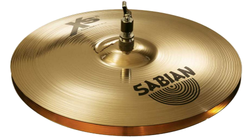
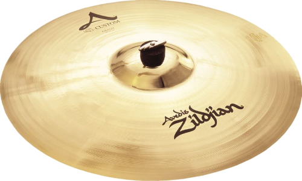
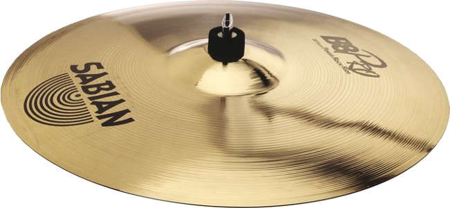
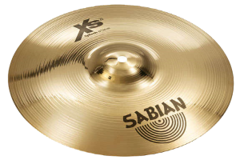
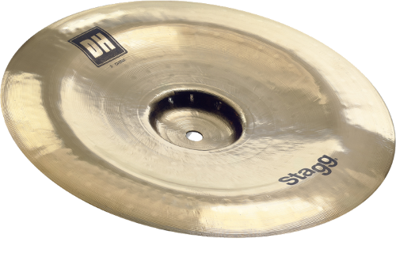

כלי הקשה : מצילות
באופן מפתיע, המתופף הממוצע (תלוי גם בסגנון) מתופף באופן תכוף יותר על המצילות, מאשר על התופים. המצילה היא כלי הקשה מכריע שמגדיר את מערכת התופים. מערכת תופים ללא מצילות היא לא מערכת תופים. המצילות מביאות איתן את הצלילים שהתופים אינם יכולים להביא, וזה לשבור קצב לצורך מעבר למקצב אחר, וזה בין היתר גם להגדיר את הקצב (מצילת ההיי-האט עושה זאת מצוין). המצילה עשויה מצלחת מתכת עגולה ודקה, המורכבת מסגסוגות מבוססות נחושת. מה שמבדיל את הצלילים של סוגי המצילות הוא הקוטר שלהן, אשר מגדיר את אורך הצליל שלהן, ואת עובי המצילה, שמגדיר את הצליל שלה. מצילה בעל גודל X יכולה להישמע אחרת לגמרי ממצילה באותו הגודל X. תלוי בעובי המתכת, ובכמה היא קעורה. למעט המצילות שמוזכרות כאן, קיימים עוד המון סוגי מצילות שהן פחות פופולריות שלא נזכיר כאן, אז קבלו אותן, את סוגי המצילות:
היי-הט (Hi-Hat)
מצילה המורכת בעצם משתי מצילות, כשהן מונחות אחת על השנייה, ומופעלות על ידי סטנד מיוחד. המצילה תחתונה מונחת עם חלקה הקמור כלפי מטה על הסטנד, בעוד שהמצילה העליונה מחוברת למוט עם חלקה הקמור כלפי מעלה. ההיי הט מופעל על ידי פדאל המחובר לסטנד, המאפשרת פתיחה וסגירה של ההיי הט. צלילו של ההיי הט כשהוא סגור חד ומהיר הדומה ל”צ’יק”, ומשמש כקצב קבוע (Ostinato) במקצבים. כשפותחים את ההיי הט, המצילות נוגעות אחת בשנייה ויוצרת צליל גס ומתמשך המשמש בדגשים בתוך מקצבים. מיקום ההיי הט (למתופפים ימניים) הוא משמאל לתוף הסנר ומופעל על ידי רגל שמאל.
היי-הט במצב פתוח
היי-הט במצב סגור

קראש (Crash)
המצילה שאני אישית הכי מתחבר אל הצליל שהיא מביאה איתה. מצילה בעל צליל גס ועוצמתי ומכאן שמה. הקראש משמשת בעיקר לסיום פראזות בגלל הצליל המהיר שלה הדומה להתנפצות. בנוסף לקראש יש אפקט דרמטי חזק. המצילה הזאת משמשת מתופפים הרבה במעברים בין מקצבים שונים. קראש היא המצילה העוצמתית ביותר במערכת התופים. בדרך כלל במוסיקת מטאל משתמשים בה בתדירות יותר גבוהה מאשר סגנונות מוסיקה אחרים. הסבר נוסף לשמה של המצילה הוא זה שהיא למעשה שוברת את הקצב, כלומר שוברת מקצב על מנת לעבור למקצב אחר. 
רייד (Ride)
המצילה הגדולה ביותר במערכת התופים, הממוקמת בדרך כלל מעל הפלור טום. צלילה של הרייד בהיר ומתמשך, ונשמע כמו “פינג”. היא משמשת יותר למקצבים, ופחות לדגשים, כמו מצילת הקראש למשל. גודלה הסטנדרטי של מצילת הרייד הוא 20 אינץ’, והיא מגיעה במשקלים שונים – קל ודק (לצורך ג’אז), בינוני וכבד (לצורך רוק כבד). 
ספלאש (Splash)
המצילה הקטנה ביותר במערכת, ומכאן שיש לה צליל גבוה וקצר. השימוש בספלאשים נפוץ מאד במוסיקת רוק. הספלאשים מגיעות בקוטר של בין 6 ל-12. אני אישית מאד ממליץ להשתמש במצילה הזו – היא מוסיפה הרבה גיוון למערכת. את הספלאש ניתן למקם היכן שרוצים – כמובן שצריך לדאוג לקבל גישה אליה. במערכת שלי השתמשתי ב-2 ספלאשים, אחת בגודל 8, ואחת נוספת בגודל 10. 
צ'יינה (China)
מצילה הנראית כאילו נתלית הפוכה, הצליל שלה מאד מזכיר את צליל הגונג. צלילה אגרסיבי, חד ומלוכלך והשימוש בה הוא בעיקר במוזיקת הפרוגרסיב רוק, הפרוגרסיב מטאל. החיסרון שלה הוא שהצליל שלה הוא מאד ספציפי לסגנון שאליו היא נועדה, ובסגנונות נגינה שונים נדיר מאד הצורך בה. לי אישית הייתה את המצילה הזו, והבנתי גם אני שאם אני לא מנגן רוק\מטאל – אז ניתן להסתדר גם בלעדיה. מה שכן – אם מכניסים אותה לעניינים והיא משתלבת – אז השילוב נותן תוצאה מאד יפה. 